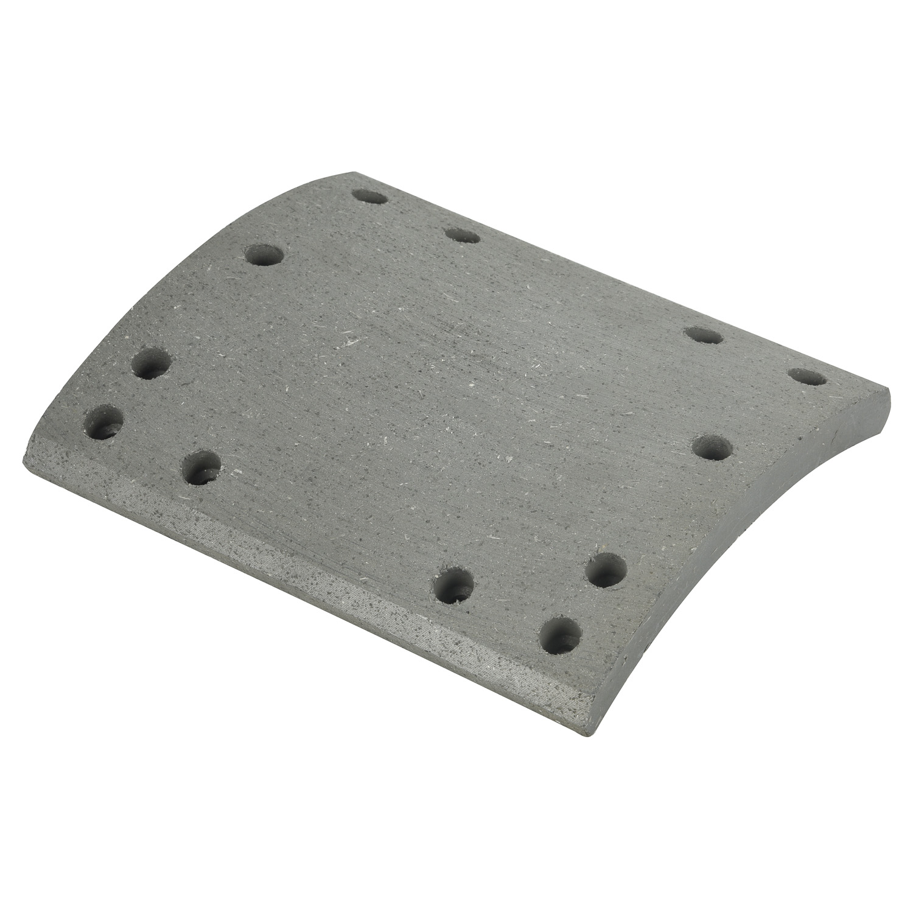

BPW European Trailer · BC/39/1
BPW 11.5T / 12T / 14T
/MOT_2521.jpg)
214 × 200 × 17.5/11.0 mm · 10 Rivet Holes. Covers BC/36/1 (180mm), BC/37/1 (200mm), BC/38/1, and BC/39/1 (11.5T).
Aftermarket commercial trailers and tippers frequently undergo complete axle swaps, breaking any link between truck VIN/model and factory OE brake part numbers. Accurate replacement requires measuring four physical parameters: Outer Arc Length (A), Lining Width (C), Center/End Thickness (D), and Rivet Hole Count plus Rivet Diameter (6–20 holes, Φ6–10 mm). KOOYING maps 94 drum lining molds across BPW (BC/36/1–BC/39/1), Meritor (19369, 19370, 19553), Fuwa (11.5T–16T), and Hande (35T) axles.
214 × 200 × 17.5/11.0 mm · 10 Rivet Holes. Covers BC/36/1 (180mm), BC/37/1 (200mm), BC/38/1, and BC/39/1 (11.5T).

215 × 178 × 19.0/12.5 mm · 8 Rivet Holes. Direct fit for 4707Q, 4515Q (19370), 19553 (8" width), and US 12T Axles.

215 × 200 × 18.0/13.0 mm · 10 Holes. Built for Middle East & Southeast Asia overloaded logging and port semi-trailers.
| Axle Series | WVA / BFMC / KOOYING | Outer Arc × Width × Thickness (mm) | Holes | Rivet / Taper | Primary Operating Corridor |
|---|---|---|---|---|---|
| BPW 10T–12T | 19032 · BC/36/1 (GYS-007) | 220 × 180 × 17.5/10.5 | 10 | 8×15 · Taper 203 | Europe · Middle East · South America |
| BPW 12T–14T | 19094 · BC/37/1 (GYS-018) | 220 × 200 × 17.5/10.5 | 10 | 8×15 · Taper 203 | Europe · Middle East · South America |
| BPW 11.5T Heavy | BC/39/1 (GYS-BC39) | 214 × 200 × 17.5/11.0 | 10 | 8×15 · Heavy Axle | Middle East · South America |
| Meritor Q-Plus 16.5×7" | WVA 19369 / 4707Q | 215 × 178 × 19.0/12.5 | 8 | Q-Series 7" | North America · South America |
| Meritor 8" Heavy | WVA 19553 (GYS-19553) | 203.2 × 200 × 22.0/14.0 | 12 | Rivet Ø8 · Taper 180 | North America · South America |
| Meritor Drive Axle A/B | Meritor A / B (GYS-MR) | 212 × 178 × 14.5/18.5 | 14 | Dual Shoe A/B | Global Heavy Tractors |
| Fuwa 11.5T Trailer | GYS-FW115A / B | 165/214 × 200 × 12.5/16.8 | 8 / 10 | Rivet Ø8 · Taper 180 | Southeast Asia · Middle East |
| Fuwa 16T-302 Heavy | GYS-FW16A3 | 215 × 200 × 18.0/13.0 | 10 | Heavy Trailer Spec | Southeast Asia · Middle East |
| Hande 35T Mining Front | Hande 35T F | 240 × 220 × 18.5 | 20 | Mining Drum | Mining & Off-Highway Fleets |
| Hande 35T Mining Rear | Hande 35T R | 240 × 240 × 18.5 | 20 | Mining Drum | Mining & Off-Highway Fleets |